Arbre généalogique · établi en juin 2026
Gwoźnica Górna (Galicie) → Drohobycz → Noyelles-sous-Lens, bassin minier (France)
Charles Dufour
Racine Dufour (v. 1630)Laurent Delattre
Branche Delattre · HarnesMarie Deprez
Branche DeprezHubert Leclercq
Racine · Harnes (v. 1640)Michel Lompas
Racine Lompas (v. 1650)Marie Martine Casteau
Branche CasteauGérard Lerouge
Racine Lerouge (v. 1620)Marguerite Caron
Branche CaronCharles Dufour
Branche Dufour · AnnayIsabeau Lerouge
Branche Lerouge · VendinJean François Bauduin
Branche Bauduin · HarnesAntoinette Leborgne
Branche LeborgneNoël Félix Leclercq
Manouvrier · HarnesThérèse Delattre
Branche Delattre · HarnesCornil Legay
Branche Legay · NoyellesÉlisabeth Lompas
Branche Lompas · NoyellesPierre Alexandre
Branche Alexandre · VendinBrigitte Lamour
Branche LamourCharles Michel Dufour
Branche Dufour · AnnayMarie Angélique Alexandre
Branche AlexandreÉloy Lesire
Branche Lesire · Sailly-LabourseMarie Angélique Legay
Branche Legay · NoyellesCharles Joseph Devillers
Censier marchand · GivenchyMarie Joseph Leveugle
Branche Leveugle · GivenchyAntoine Ignace Leclercq
Jean Philippe Leclercq
Marie Thérèse Leclercq
François Louis Leclercq
Valentin Leclercq
Marie Leclercq
Antoinette Leclercq
Pierre Martin Leclercq
Hubert Leclercq
Leclercq de HarnesMarie Catherine Bauduin
Branche Bauduin · HarnesJacques Albert Leclercq
Ménager · NoyellesMarie Angélique Roche
Branche Roche · NoyellesJean Claude Lesire
Branche Lesire · NoyellesMarie Josèphe Bourdon
Branche BourdonRobert Lucas
Échevin d'AnnayMarie Joseph Alexandre
Branche AlexandreCharles Joseph Dufour
Fermier · AnnayMarie Anne Lucas
Branche Lucas · AnnayGaspard Baltazar Melchior Leclercq
Branche Leclercq · NoyellesMarie Valentine Lesire
Branche Lesire · NoyellesPierre Ignace Leclercq
Pierre Martin Leclercq
Marchand de lin · HarnesAngélique Victoire Devillers
Branche Devillers · GivenchyDominique Lesire
Branche Lesire · NoyellesMarie Aldegonde Clin
Branche ClinFrançois Michel Detournay
Laboureur · GivenchyAugustine Josèphe Pinte
Branche Pinte · GivenchySabine Lesire
Branche Lesire · NoyellesAlexis Joseph Waflart
Branche Waflart · NoyellesAnne Justine Legay
Branche Legay · NoyellesPierre Joseph Leclercq
Leclercq · de Harnes à NoyellesClémentine Joseph Leclercq
Branche Leclercq · NoyellesJean-Baptiste Dussonval
Branche DussonvalAugustine Roche
Branche RocheAimable Joseph Dufour
Fermier · AnnayBonne Augustine Detournay
Branche Detournay · GivenchyLouis Joseph Quantin
Colporteur · † 1850Madeleine Françoise Madelon
Branche MadelonÉméry Joseph Delattre
Musicien · Loison-sous-LensEsclarmonde Dussonval
Branche DussonvalPierre François Joseph Leclercq
Cultivateur · NoyellesMarie Thérèse Waflart
Branche WaflartJean Louis Lesire
Cultivateur · NoyellesAugustine Catherine Dufour
Branche Dufour · AnnayJules Léonard
Branche Léonard · Loison-sous-LensConstantine Delattre
Branche Delattre · LoisonFeliks Jastrzębski
Parents de JózefMagdalena Dopart
acte 1902 : « Chyłek » · Geneteka : « Dopart »Wojciech Koza
Parents de MariaN. Chyłek
Épouse de Wojciech KozaCyryl Bezyk
Parents d'AnastasiaAhafia Dżulak
Grands-parents maternels d'AhafiaPierre Joseph Leclercq
Lignée Leclercq · NoyellesClémence Aufreville
Enfant trouvée · hospices de DouaiJean François Lesire
Branche Lesire · NoyellesVictorine Quentin
Branche QuentinAugustine Lesire
Bonne Victoire Lesire
Julie Lesire
Florimond Lesire
Juliette Lesire
Magdeleine Lesire
Jules Lesire
Branche LesireClémence Rainguez
Branche RainguezJózef Jastrzębski
Père de NikodemMaria Koza
Mère de NikodemAnastasia Bezyk
Mère d'Ahafia · père non nommé à l'acteJean-Baptiste Leclercq
Cultivateur · Noyelles-sous-LensMarie-Antoinette Léonard
Branche Léonard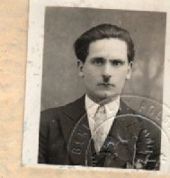
Nikodem Jastrzębski
Catholique romain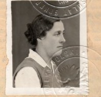
Ahafia Bezyk
Gréco-catholique⚭ 28 juillet 1929 · Drohobycz · paroisse latine
Berthe Leclercq
Pierre Joseph Leclercq
Jeanne Leclercq
Georget Leclercq
Jules Leclercq
Poilu 14-18 · 110ᵉ R.I.Eugénie Lesire
Branche Lesire⚭ 18 octobre 1919 · Noyelles-sous-Lens
Angèle Lesire
Marthe Lesire
Georgette Lesire
Georges Lesire
Andrée Lesire
Stanislas Jastrzębski
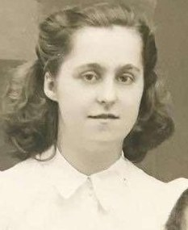
Janina Jastrzębski
Fille de Nikodem & Ahafia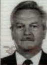
André Leclercq
Fils de Jules & Eugénie⚭ 6 avril 1953 · Noyelles-sous-Lens
Jeanne Leclercq
Jean Leclercq
Hervé Leclercq
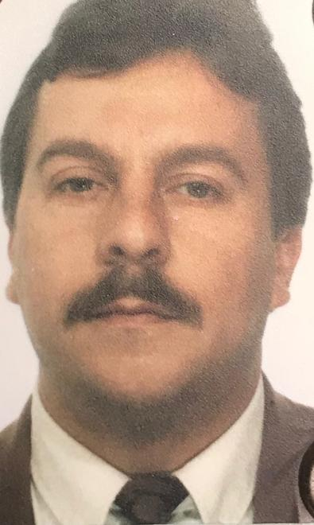
Jean-Marc Leclercq
Lignée LeclercqSylvie Molnar
Branche Molnar⚭ 13 juillet 1985 · Sallaumines
Décaïeuls · 11ᵉ génération
Nonaïeuls · 10ᵉ génération
Octaïeuls · 9ᵉ génération
Septaïeuls · 8ᵉ génération
Sextaïeuls · 7ᵉ génération
Quintaïeuls · 6ᵉ génération
Quadrisaïeuls · 5ᵉ génération
Trisaïeuls · 4ᵉ génération
Arrière-grands-parents
Grands-parents
Parents
La famille se poursuit · jusqu’à aujourd’hui
De la Galicie au bassin minier — quelques visages derrière les actes
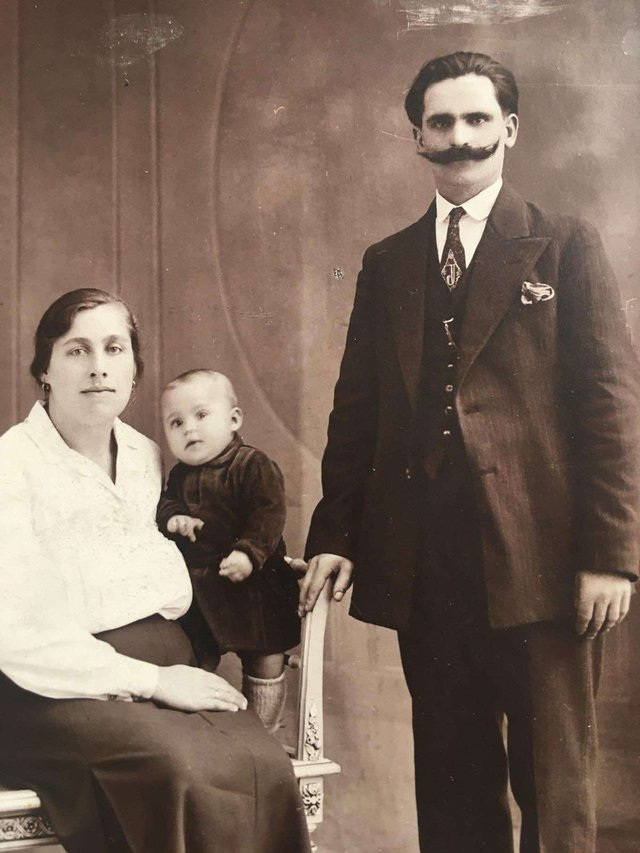
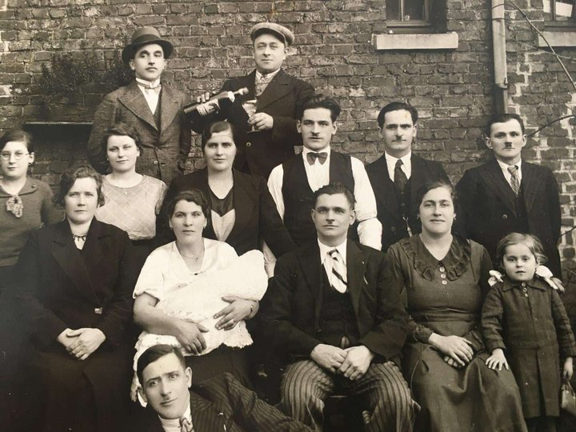
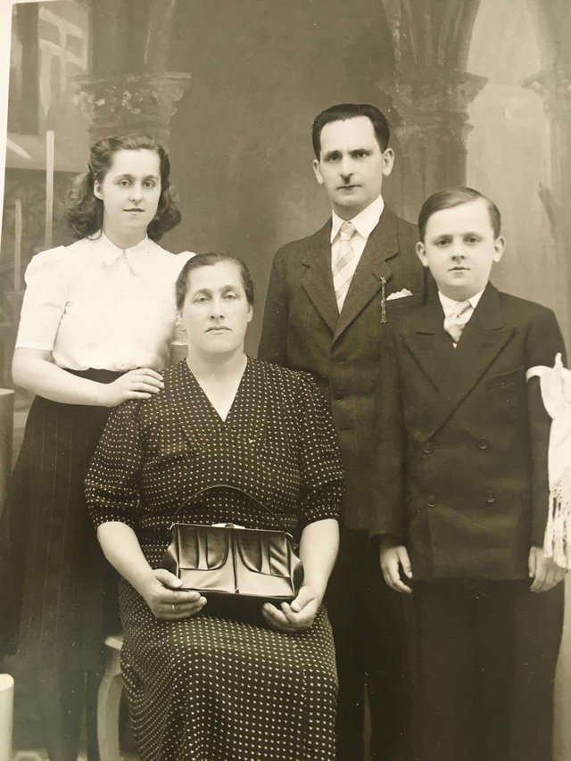
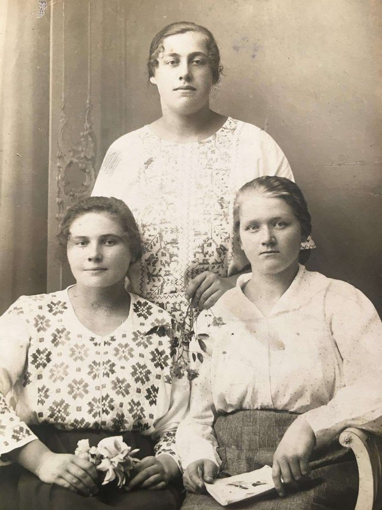
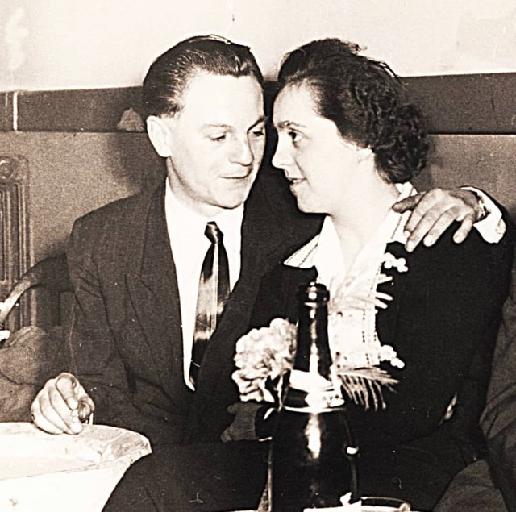
Des villages de Galicie au bassin minier — cliquez un secteur pour zoomer, un lieu pour voir ses événements
⛶ plein écran · clic sur un secteur = zoom · survol d'un lieu ou d'une étape = détails
Nous ne possédons pas l'itinéraire exact de Nikodem Jastrzębski et Ahafia Bezyk, mais leur voyage a suivi le circuit organisé mis en place après la convention franco-polonaise d'émigration du 3 septembre 1919 : recrutement en Pologne par la Société générale d'immigration (SGI) pour le compte des houillères françaises, puis acheminement collectif jusqu'au bassin minier. Voici cette route type.
Mariés à Drohobycz le 28 juillet 1929, Nikodem et Ahafia quittent la Galicie. Comme des dizaines de milliers de Polonais, ils gagnent d'abord le grand centre de rassemblement de Haute-Silésie.
Passage obligé : le camp d'émigration de Mysłowice, géré par la SGI pour les compagnies minières. Visite médicale, sélection, signature du contrat de travail, puis constitution des convois de trains spéciaux à destination de la France.
Les convois traversaient l'Allemagne de Weimar d'est en ouest en trains spéciaux, sans arrêt libre, jusqu'à la frontière française — environ deux jours de voyage.
Le dépôt de Toul était le grand centre de réception et de triage de la main-d'œuvre immigrée en France : nouvelle visite médicale, désinfection, formalités, puis répartition des mineurs entre les compagnies houillères selon leurs besoins.
Affectés à une compagnie du bassin (Cie des mines de Courrières), ils s'installent dans un coron de Noyelles-sous-Lens. Leur fille Janina y naît en 1932, preuve que la famille y était établie au plus tard à cette date.
Trajet total : ≈ 1 650 km — reconstitution historique, non documentée pour cette famille.
Le nom vient du surnom médiéval « le clerc » — l'homme lettré, celui qui sait lire et écrire — avec ce -cq final propre aux graphies picardes et artésiennes : c'est pourquoi le Nord écrit « Leclercq » quand la Normandie écrit « Leclerc ». Avant le XIXᵉ siècle, un nom n'a pas d'orthographe : il a un son, et l'écrire est l'affaire de celui qui tient la plume. Les actes de la famille, tous passés à Harnes, montrent la soudure se faire sous nos yeux :
| 1696 | « Noël le Clercq »2 mots baptême de Hubert — le curé d'Harnes |
| 1710 | « noel le clercq »2 mots sépulture de Noël Félix — le curé d'Harnes |
| 1768 | « pierre martin Leclercq »soudé ban de mariage — le curé Bracquart |
| 1789 | « leclercq »soudé procès-verbal des États généraux — le greffier |
| 1789 | « noel valletin le clercq »2 mots cahier de doléances — signature autographe de Noël Vallentin |
| 1816 | « pierre martin Leclercq »soudé acte de décès — l'état civil d'Harnes |
| XIXᵉ | « Leclercq »soudé actes 1835-1891, fiches matricules — graphie définitive |
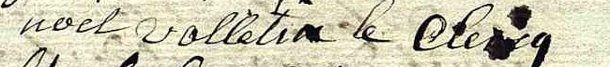
Ce ne sont pas les ancêtres qui « écrivaient » leur nom : Pierre Martin et Pierre Ignace ne savaient pas signer. La graphie a toujours été l'affaire des lettrés qui tenaient la plume — curés, greffiers, puis officiers d'état civil. Dans les registres d'Harnes, la soudure s'opère vers 1760-1770 : deux mots en 1696 et 1710, un seul dès le ban de 1768 — un glissement d'usage des scribes, pas une décision de la famille.
Le document le plus parlant est celui de 1789 : dans la même pièce, le greffier inscrit « leclercq » en un mot dans la liste des comparants… et Noël Vallentin signe « le clercq » en deux mots, comme on le lui avait appris des décennies plus tôt. Sa main conserve l'usage de sa jeunesse au moment exact où l'administration bascule — et, ironie, le seul de la famille qui savait écrire portait littéralement le nom de « celui qui sait écrire ».
La forme « Leclercq » se fige avec l'état civil : à partir de 1792, la graphie de l'acte de naissance fait foi, chaque acte se copie sur le précédent, et l'on ne change plus un nom que par rectification judiciaire. Pour la lignée, elle est verrouillée au plus tard en 1816 — et tout le XIXᵉ siècle la reproduit sans varier.
39 documents classés par type — cliquez une catégorie pour la déployer.
{kind=link}
{kind=link}
{kind=link}
{kind=link}
{kind=link}
{kind=link}
{kind=link}
{kind=link}
{kind=link}
{kind=link}
{kind=link}
{kind=link}
{kind=link}
{kind=link}
{kind=link}
{kind=link}
{kind=link}
{kind=link}
{kind=link}
{kind=link}
{kind=link}
{kind=link}
{kind=link}
{kind=link}
{kind=link}
{kind=link}
{kind=link}
{kind=link}
{kind=link}
{kind=link}
{kind=link}
{kind=link}
{kind=link}
{kind=link}